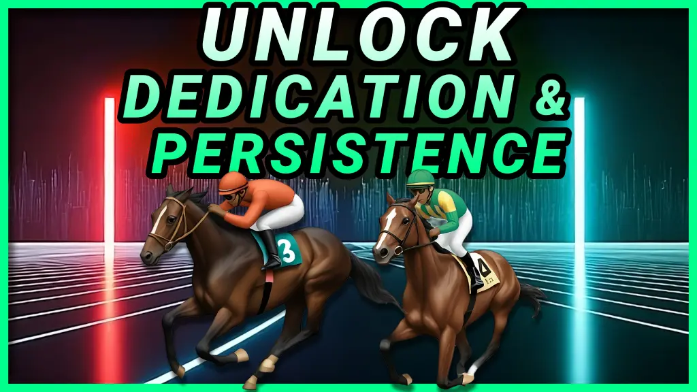
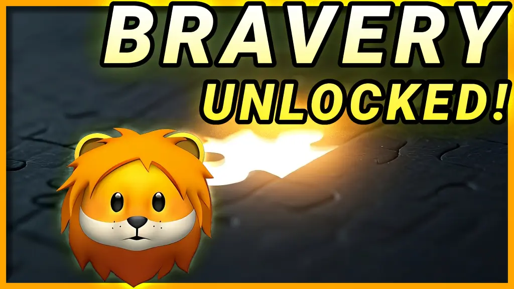

-
Why Integrity Matters: Live Authentically and Build Trust
Discover how to enter the Flow State and unlock peak performance instantly. Learn the science, stories, and actionable steps to harness this powerful mindset.
Related Article: Integrity at Work: The Secret to Career Growth and Job Success
Related Episode: Integrity Matters: Unlock the Secret to Staying True to Yourself
-
How to Enter Flow State & Unlock Peak Performance Instantly!
Discover how to enter the Flow State and unlock peak performance instantly. Learn the science, stories, and actionable steps to harness this powerful mindset.
Related Article: Unlock Peak Performance: How Flow State Can Transform Your Career
Related Episode: üèÑ‚Äç‚ôÇÔ∏è How to Enter Flow State & Unlock Peak Performance Instantly!
-
Creative Breakthroughs: Unlock Creativity with Stories, Science, and Steps
Discover the secrets to breaking through creative blocks and unleashing your potential through inspiring stories, proven strategies, and cutting-edge science.
Related Article: Creative Breakthroughs: Unlock Creativity for Career Success and Professional Growth
Related Episode: Unlock Creative Breakthroughs: Crush Mental Blocks and Thrive Today
-
Got Grit? The Power of Perseverance
Discover how grit and perseverance can transform your life. Featuring insights from 'Can't Hurt Me,' 'Mindset,' and 'Adversity Quotient,' this blog dives into the power of resilience.
Related Article: Why Grit Matters in Your Career
Related Episode: Grit Unlocked: The Secret to Pushing Through Any Challenge
-
Unlock Influence Secrets with Dr. Christopher Phelps
Explore powerful insights on ethical influence and persuasion with Dr. Christopher Phelps, CEO of the Cialdini Institute, featuring the timeless research of Dr. Robert Cialdini.
Related Article: Unlocking Influence for Professional Success: Insights from Dr. Christopher Phelps
Related Episode: Unlock Influence Secrets with Guest Dr. Phelps | CEO Cialdini Institute
-
 Building Resilience: The Key to Thriving in Adversity
Building Resilience: The Key to Thriving in Adversity
Discover the secrets to building resilience and thriving in the face of adversity. Learn actionable tips from inspiring stories, neuroscience, and must-read books.
Related Article: Building Resilience: A Career Advantage for Thriving in Tough Times
Related Episode: Unlock Resilience: How to Turn Setbacks → Strength | Never Give Up
-

Unlocking Success Through Dedication
Dive into inspiring stories and the science of dedication and persistence to learn actionable strategies for building habits that lead to success.
Related Article: Unlocking Success Through Dedication: A Career-Boosting Strategy
Related Episode: The Secrets to Staying Dedicated: Build Habits That Guarantee Success
-

The Secret to Bravery: Following Your Heart Honestly Without Fear
Discover the power of bravery and honesty to follow your heart without fear. Learn actionable steps and insights backed by science and inspiring stories.
Related Article: Leading with Courage and Integrity: How Bravery Fuels Professional Success
Related Episode: The Secret to Bravery: Following Your Heart Honestly Without Fear
-
 Master the Art of Collaboration: Win Every Argument with Honor
Master the Art of Collaboration: Win Every Argument with Honor
Discover how to master the art of collaboration and win every argument with honor. Learn actionable strategies and insights based on science, stories, and key books on negotiation.
Related Article: Win-Win Solutions: Elevate Your Career Through Smarter Negotiations
Related Episode: Master the Art of Collaboration: Win Every Argument with Honor
-
Mastering Your Emotions: The Key to Trust and Honor
Learn how emotional control shapes trust and honor. Discover neuroscience insights, real-life stories, and actionable techniques to master your emotions.
Related Article: Unlocking Emotional Control: The Key to Career Growth and Leadership
Related Episode: Unlocking Emotional Control: The Secret to True Honor and Trust
-
Why Honoring Your Word is the Secret to Unbreakable Trust
Discover why honoring your word is the foundation of trust and success. Learn real-life stories, scientific insights, and actionable steps to strengthen your credibility.
Related Article: Integrity at Work: The Secret to Career Growth and Job Success
Related Episode: Why Honoring Your Word is the Secret to Unbreakable Trust
-
Why Integrity Matters: Live Authentically and Build Trust
Integrity is the foundation of character and success. This episode dives into how staying true to your principles strengthens relationships, builds trust, and inspires others. Learn from real-world examples and practical advice to align your actions with your core values and live authentically.
Related Article: Why Keeping Your Word is the #1 Skill for Career Success
Related Episode: Integrity Matters: Unlock the Secret to Staying True to Yourself